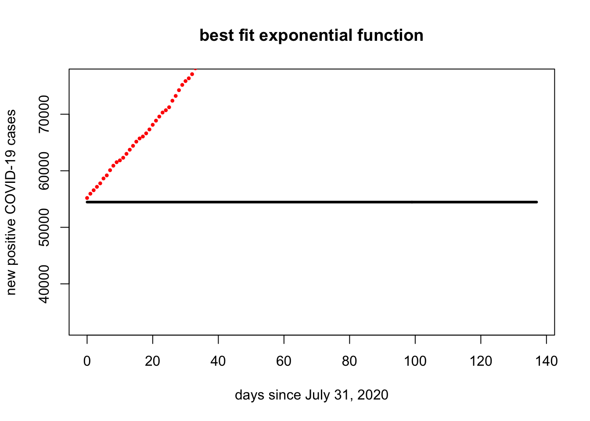
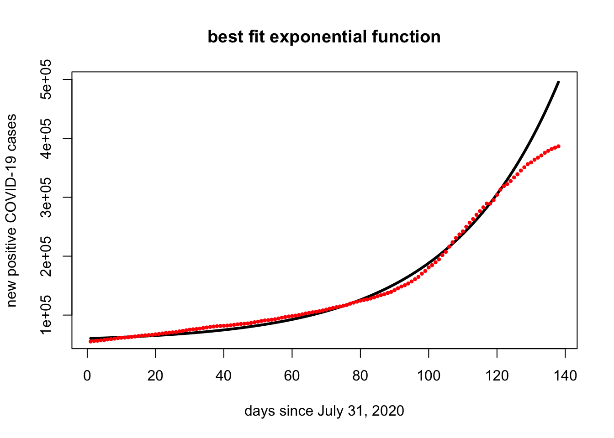

Section 1 Quiz 4 Review
1.1 Overview
Our fourth quiz has two goals
- It will cover the new material from Sections 6.1-6.5 and 7.1
- It will have some comprehensive material.
The comprehensive material will not be tricky. My goal is to be sure that you understand the fundamentals of the course.
The best way to study is to do practice problems. The Quiz will have calculation problems (like Edfinity) and more conceptual problems (like the problem sets). Here are some ways to practice:
- Make sure that you have mastered the Vocabulary, Skills and Concepts listed below.
- Look over the Edfinity homework assingments
- Do practice problems from the Edfinity Practice assignments. These allow you to “Practice Similar” by generating new variations of the same problem.
- Redo the Jamboard problems
- Try to resolve the Problem Sets and compare your answers to the solutions.
- Do the practice problems below. Compare your answers to the solutions.
1.2 Vocabulary, Concepts and Skills
See the Week 7-8 Learning Goals for the list of vocabulary, concepts and skills.
1.3 Comprehensive Review
Here are some terms and ideas that you should know:
- Pivot position.
- Elementary row operations.
- Ways to compute and think about \(A v\) in both words and symbols.
- Linear combination.
- \(Span(v_1, . . . , v_k).\) In particular, you should be able to visualize \(Span(v)\), \(Span(u,v)\) and give geometric interpretations of these sets in \(\mathbb{R}^2\) or \(\mathbb{R}^3\).
- Linearly independent and linearly dependent.
- Linear transformation.
- Domain, codomain, image, range, onto, and one-to-one.
- The transpose of a matrix, the inverse of a matrix, invertible matrix.
- Subspace.
- Null space, column space, and row space of a matrix.
- Kernel and range of a linear transformation.
- Basis and dimension.
- Rank.
- Eigenvalue, eigenvector, eigenspace.
- Characteristic polynomial and characteristic equation.
- Diagonalizable matrix.
- Dot product, length of a vector, angle between vectors, cosine similarity
- Orthogonal vectors, orthogonal spaces.
- Orthogonal complement of a subspace.
- Orthogonal basis, orthonormal basis, orthogonal matrix.
- Orthogonal projection, least squares solutions.
- Orthogonal diagonalization of symmetric matrix
1.4 Skills
Form an augmented matrix and reduce a matrix or augmented matrix into row echelon or reduced row echelon form. Determine whether a given matrix is in either of those forms. Determine whether a particular form of a matrix is a possible row echelon or reduced echelon form.
Determine whether a system is consistent and if it has a unique solution. Write the general solution in parametric vector form. Describe the set of solutions geometrically.
Interpret a system of equations as (i) a vector equation (ii) a matrix equation.
Determine when a vector is in a subset spanned by specified vectors. Exhibit a vector as a linear combination of specified vectors. Determine whether a specified vector is in the range of a linear transformation.
Determine whether the columns of an \(m \times n\) matrix span \(\mathbb{R}^m\). Determine whether the columns are linearly independent.
Compute a matrix-vector product, and interpret it as a linear combination of the columns of \(A\). Use linearity of matrix multiplication to compute \(A(u + v)\) or \(A(c u)\).
Find the matrix of a linear transformation.
Determine whether a transformation is linear. Determine whether a linear transformation \(T( x)=A x\) is one-to-one or onto, using the properties of the matrix \(A\).
Determine whether a subset of vectors is a subspace.
Determine whether a set of vectors is linearly independent and whether it is a basis for some subspace or vector space. Find a basis for a vector space, or for the null space or column space of a matrix, or for the kernel or range of a linear transformation. Find the dimension of a vector space or subspace. Find the dimension of the null space (number of free variables) and column space (number of pivot columns) of a matrix.
Find and interpret the rank of a matrix.
Calculate the characteristic equation, eigenvalues, and eigenvectors of a square matrix. Find eigenvectors for a specific eigenvalue. Check if a vector is an eigenvector of a given matrix.
Determine whether a square matrix is diagonalizable. Factor a diagonalizable matrix into \(A=PDP^{-1}\), where \(D\) is a diagonal matrix.
Use eigenvalues and eigenvectors to analyze the long-term behavior of discrete dynamical systems.
Find the length of a vector, the distance between two vectors, or the angle between two vectors.
Determine whether a set of vectors are orthogonal. Determine whether a vector is orthogonal to a subspace or whether two subspaces are orthogonal, by checking whether their basis vectors are orthogonal.
Find the orthogonal projection of (i) one vector onto another vector, or (ii) one vector onto a subspace (using an orthogonal basis for the subspace). Find the distance between a vector and a space (by computing the residual).
Set up the matrix equation to find the ``best-fitting’’ function to a set of data using least squares. Interpret the normal equations \(A^{\top}A x = A^{\top}b\). Find the least squares approximation by solving the normal equations \(\hat{x}=(A^{\top}A)^{-1}A^{\top}b\).
1.5 Practice Problems
1.5.1
Let \(\mathsf{v} = \begin{bmatrix}1 \\ -1 \\ 1 \end{bmatrix}\) and \(\mathsf{w}= \begin{bmatrix}5 \\ 2 \\ 3 \end{bmatrix}\).
Find \(\| \mathsf{v} \|\) and \(\| \mathsf{w} \|\).
Find the distance between \(\mathsf{v}\) and \(\mathsf{w}\).
Find the cosine of the angle between \(\mathsf{v}\) and \(\mathsf{v}\).
Find \(\mbox{proj}_{\mathsf{v}} \mathsf{w}\).
Let \(W=\mbox{span} (\mathsf{v}, \mathsf{w})\). Use the residual from the previous projection to create an orthonormal basis \(\mathsf{u}_1, \mathsf{u}_2\) for \(W\) such that \(\mathsf{u}_1\) is a vector in the same direction as \(\mathsf{v}\).
1.5.2
Let \(\mathsf{u} \neq 0\) be a vector in \(\mathbb{R}^n\). Define the function \(T: \mathbb{R}^n \rightarrow \mathbb{R}^n\) by \(T(\mathsf{x}) = \mbox{proj}_{\mathsf{u}} \mathsf{x}\). Recall that the kernel of \(T\) is the subspace \(\mbox{ker}(T) = \{ \mathsf{x} \in \mathbb{R}^n \mid T(x) = \mathbf{0} \}\). Describe \(\mbox{ker}(T)\) as explicitly as you can.
1.5.3
The vectors \(\mathsf{u}_1, \mathsf{u}_2\) form an orthonormal basis of a subspace \(W\) of \(\mathbb{R}^4\). Find the projection of \(\mathsf{v}\) onto \(W\) and determine how close \(\mathsf{v}\) is to \(W\). \[ \mathsf{u}_1 = \frac{1}{2}\begin{bmatrix} 1\\ -1\\ -1\\ 1 \end{bmatrix}, \quad \mathsf{u}_2 = \frac{1}{2}\begin{bmatrix} 1\\ -1\\ 1\\ -1 \end{bmatrix}, \quad \mathsf{v} = \begin{bmatrix} 2\\ 2\\ 4\\ 2 \end{bmatrix} \]
1.5.4
Consider vectors \(\mathsf{v}_1 = \begin{bmatrix} 1 \\ 1 \\-1 \end{bmatrix}\) and \(\mathsf{v}_2= \begin{bmatrix} 1 \\ 2 \\ 3 \end{bmatrix}\) in \(\mathbb{R}^3\). Let \(W=\mbox{span}(\mathsf{v}_1, \mathsf{v}_2)\).
Show that \(\mathsf{v}_1\) and \(\mathsf{v}_2\) are orthogonal.
Find a basis for \(W^{\perp}\).
Use orthogonal projections to find the representation of \(\mathsf{y} = \begin{bmatrix} 8 \\ 0 \\ 2 \end{bmatrix}\) as \(\mathsf{y} = \hat{\mathsf{y}} + \mathsf{z}\) where \(\hat{\mathsf{y}} \in W\) and \(\mathsf{z} \in W^{\perp}\).
1.5.5
Let \(W\) be the span of the vectors \[ \begin{bmatrix} 1 \\ -2 \\ 1 \\ 0 \\1 \end{bmatrix}, \quad \begin{bmatrix} -1 \\ 3 \\ -1 \\ 1 \\ -1 \end{bmatrix}, \quad \begin{bmatrix} 0 \\ 0 \\ 1 \\ 3 \\1 \end{bmatrix}, \quad \begin{bmatrix} 0 \\ 2 \\ 0 \\ 0 \\4 \end{bmatrix} \]
- Find a basis for \(W\). What is the dimension of this subspace?
- Find a basis for \(W^{\perp}\)
1.5.6
Consider the system \(A \mathsf{x} = \mathsf{b}\) given by \[ \begin{bmatrix} 1 & 1 & 1 \\ 1 & 2 & -1 \\ 1 & 1 & -1 \\ 1 & 2 & 1 \end{bmatrix} \begin{bmatrix} x_1\\ x_2 \\ x_3 \end{bmatrix} = \begin{bmatrix} 4\\ 1 \\ -2 \\ -1 \end{bmatrix}. \]
- Show that this system is inconsistent.
- Find the projected value \(\hat{\mathsf{b}}\), and the residual \(\mathsf{z}\).
- How close is your approximate solution to the desired target vector?
1.5.7
Here is an inconsistent system of equations: \[ \begin{bmatrix} 1 & 2 \\ 1 & 2 \\ 1 & -1 \end{bmatrix} \begin{bmatrix} x_1 \\ x_2 \end{bmatrix} = \begin{bmatrix} 6\\ 4 \\ -4 \end{bmatrix} \]
State the normal equations for this problem (be sure to do all of the necessary matrix multiplications).
Find the least squares solution to the problem.
How close is your approximate solution to the desired target vector?
1.5.8
According to the COVID Tracking Project, Minnesota had \(54,463\) positive COVID-19 cases between March 6 and 31 July, 2020. As of 16 December, 2020, that count has reached \(386,412\).
The vector covid.mn lists the total number of new COVID-19 cases in Minnesota between August 1, 2020 and December 16, 2020 (on top of the previously reported \(54,463\)).
covid.start = 54463
covid.mn = c(725, 1484, 2097, 2699, 3316, 4177, 4722, 5638, 6435, 7053, 7376, 7840, 8530, 9260, 9950, 10689, 11253, 11598, 12155, 12845, 13670, 14404, 15121, 15835, 16244, 16773, 17927, 18777, 19794, 20726, 21401, 21892, 22622, 23660, 24503, 25417, 26124, 26762, 27145, 27405, 27786, 28253, 29125, 29848, 30486, 30888, 31350, 32259, 33344, 34258, 35554, 36479, 36959, 37637, 38549, 39726, 41196, 42271, 43175, 43984, 44671, 45737, 46903, 48324, 49363, 50336, 51277, 52188, 53459, 54849, 56365, 57805, 58976, 60111, 61480, 62643, 64933, 66627, 68349, 69976, 71068, 72128, 73689, 75400, 77659, 79339, 80909, 83073, 84981, 87848, 91002, 94009, 96209, 99157, 102633, 106460, 110402, 115844, 120491, 126399, 130325, 135218, 140107, 147332, 152876, 161565, 169118, 176555, 182486, 187580, 195443, 202237, 208489, 215694, 222037, 228453, 234840, 234840, 240538, 249560, 258506, 264300, 267849, 273014, 279163, 284510, 290818, 296399, 301689, 304740, 309256, 312755, 316505, 320935, 324360, 327378, 329701, 331949)Find the best fitting exponential function \(f(t) = a e^{k t}\) for the number of COVID-19 cases in Minnesota since 31 July, 2020. Here \(t\) is the number of days since 31 July.
Run the following code to plot your function. This code assumes that your least squares solution is given by
xhat. Does it look like a good fit?
xhat = c(0,0) #this is wrong
a = exp(xhat[1])
k = xhat[2]
x = 0:(length(covid.mn)-1)
f=function(y){a * exp(k*(y))}
plot(x,f(x)+ covid.start,type="l",lwd=3,ylab="new positive COVID-19 cases", xlab="days since July 31, 2020", main="best fit exponential function")
points(x,covid.mn + covid.start,pch=20,cex=.7,col="red")
1.5.9
Consider the symmetric matrix \[ A = \begin{bmatrix} 3 & 0 & 34 & 3 \\ 0 & 6 & -34 & 0 \\ 34 & -34 & 74 & 34 \\ 3 & 0 & 34 & 3 \end{bmatrix} \]
Use RStudio to find the eigenvalues \(\lambda_1 > \lambda_2 > \lambda_3 > \lambda_4\) and their corresponding eigenvectors \(\mathsf{v}_1, \mathsf{v}_2, \mathsf{v}_3, \mathsf{v}_3\). Confirm that these eigenvectors form an orthonormal set.
Is the linear transformation \(T(\mathsf{x}) = Ax\) invertible? How do you know?
Confirm that \[ A = \lambda_{1} \mathsf{v}_1 \mathsf{v}_1^{\top} + \lambda_{2} \mathsf{v}_2 \mathsf{v}_2^{\top} + \lambda_{3} \mathsf{v}_3 \mathsf{v}_3^{\top} + \lambda_{4} \mathsf{v}_4 \mathsf{v}_4^{\top}. \]
Use your answer in part (d) to find the best rank 2 approximation for \(A\). (Be careful!)
1.5.10
Here is a matrix \(A\) and its reduced row echelon form \(B\) \[ A = \begin{bmatrix} 1 & 3 & -3 & 1 & 0 \\ 2 & 1 & 0 & 6 & 5 \\ 3 & 3 & -3 & 6 & 3 \\ -1 & 4 & -3 & -3 & -1 \end{bmatrix} \qquad \longrightarrow \qquad B = \begin{bmatrix} 1 & 0 & 0 & 2.5 & 1.5 \\ 0 & 1 & 0 & 1.0 & 2.0 \\ 0 & 0 & 1 & 1.5 & 2.5 \\ 0 & 0 & 0 & 0.0 & 0.0 \end{bmatrix}. \]
Find a basis for \(\mbox{Nul}(A)\) and \(\mbox{Col}(A)\).
Is the linear transformation \(T(\mathsf{x}) = A \mathsf{x}\) one-to-one? Onto?
How is the SVD for \(A\) related to the SVD for \(B\)? What properties will they share? What properties will be different? Make some conjectures.
Now find the SVD of both \(A\) and \(B\), and test your conjectures. Compare the singular values, the right singular vectors and the left singular vectors. Be sure to compare each of the four fundamental subspaces: \(\mbox{Nul}(M), \mbox{Col}(M), \mbox{Row}(M), \mbox{Nul}(M^{\top})\).
1.6
\(\mathsf{A}\) is a \(4 \times 5\) matrix and \(b \in \mathbb{R}^4\). The augmented matrix \([\,\mathsf{A}\mid b\,]\) row reduces as shown here. \[ [\,\mathsf{A}\mid b\,] = \left[ \begin{array}{ccccc|c} \vert & \vert & \vert & \vert & \vert &\vert\\ v_1 & v_2 & v_3 & v_4 & v_5 & b\\ \vert & \vert & \vert & \vert & \vert &\vert\\ \end{array} \right] \longrightarrow \left[ \begin{array}{rrrrr|r} 1 & 0 & 2 & 0 & -1 &1\\ 0 & 1 & -1 & 0 & -1 &1\\ 0 & 0 & 0 & 1 & 1 &-2\\ 0 & 0 & 0 & 0 & 0 & 0 \end{array} \right] \] a. Give all of the solutions to o \(\mathsf{A} x = b\) in parametric form.
Give a dependence relation among the columns of \(\mathsf{A}\).
These true-false questions refer to the coefficient matrix \(\mathsf{A}\) above. Decide if the statement is T = True or F = False. No justification necessary.
- \(\mathsf{A} x = b\) has a solution for all \(b \in \mathbb{R}^4\).
- The columns of \(\mathsf{A}\) span \(\mathbb{R}^4\).
- If \(\mathsf{A} x = b\) has a solution, then it has infinitely many solutions.
- The linear transformation \(x \mapsto \mathsf{A} x\) is one-to-one
- The linear transformation \(x \mapsto \mathsf{A} x\) is onto
1.7
Suppose that \(\mathsf{A}\) is an \(n \times n\) matrix and that \(\vec{\mathsf{x}}_1\) and \(\vec{\mathsf{x}}_2\) are two solutions to \(\mathsf{A}x = \vec{\mathsf{b}}\) with \(\vec{\mathsf{b}}\not= \vec{\mathbf{0}}\) and \(\vec{\mathsf{x}}_1 \not= \vec{\mathsf{x}}_2\).
Give a nonzero solution to \(\mathsf{A}\vec{\mathsf{x}}= \vec{\mathbf{0}}\).
Give a solution to \(\mathsf{A}\vec{\mathsf{x}}= \vec{\mathsf{b}}\) that no one else in the class has.
Decide if the statement is T = True or F = False, or I = there is not enough information to know.
- The equation \(\mathsf{A}x = \vec{\mathsf{y}}\) has a solution for all \(\vec{\mathsf{y}}\in \mathbb{R}^n\)
- \(\lambda = 0\) is an eigenvalue of \(\mathsf{A}\)
- \(\mathsf{A}\) is invertible
- \(\mathsf{A}\) is diagonalizable
1.8 Watch this!
The answer to at least one question on Quiz 4 is contained in this video.
1.9 Solutions to Practice Problems
## Loading required package: pracma1.9.1
\[\begin{align} \| \mathsf{v} \| &= \sqrt{ \mathsf{v} \cdot \mathsf{v}} = \sqrt{1+1+1} = \sqrt{3} \\ \| \mathsf{w} \| &= \sqrt{ \mathsf{w} \cdot \mathsf{vw}} = \sqrt{25+4+9} = \sqrt{38} \\ \end{align}\]
We have \(\mathsf{v} - \mathsf{w} = \begin{bmatrix} -4 \\ -3 \\ -2 \end{bmatrix}\) and so \[ \| \mathsf{v} - \mathsf{w}\| = \sqrt{16+9+4} = \sqrt{29} \]
\[ \cos \theta = \frac{\mathsf{v} \cdot \mathsf{w}}{\| \mathsf{v} \| \, \|\mathsf{w} \| } = \frac{5-2+3}{\sqrt{3} \, \sqrt{38} } = \frac{2\sqrt{3}}{\sqrt{38} } \]
\[ \hat{\mathsf{w}} = \mbox{proj}_{\mathsf{v}} \mathsf{w} = \frac{\mathsf{v} \cdot \mathsf{w}}{ \mathsf{v} \cdot \mathsf{v} } \, \mathsf{v} = \frac{5-2+3}{1+1+1} \mathsf{v} = 2 \mathsf{v} = \begin{bmatrix} 2 \\ -2 \\ 2 \end{bmatrix} \]
Using \(\hat{\mathsf{w}}\) from the previous problem, we know that \[ \mathsf{z} = \mathsf{w} - \hat{\mathsf{w}} = \begin{bmatrix} 5 \\ 2 \\ 3 \end{bmatrix} - \begin{bmatrix} 2 \\ -2 \\ 2 \end{bmatrix} = \begin{bmatrix} 3 \\ 4 \\ 1 \end{bmatrix} \] is orthogonal to \(\mathsf{v}\).So an orthonormal basis is \[ \frac{1}{\sqrt{3}} \begin{bmatrix} 1 \\ -1 \\ 1 \end{bmatrix} \quad \mbox{and} \quad \frac{1}{\sqrt{26}} \begin{bmatrix} 3 \\ 4 \\ 1 \end{bmatrix} \]
1.9.2
Here are a few ways to describe \(\mbox{ker}(T)\). + \(\mbox{ker}(T) = \{ \mathsf{x} \in \mathbb{R}^n \mid \mathsf{x} \cdot \mathsf{u} = 0 \}\). + \(\mbox{ker}(T)\) is the set of vectors that are orthogonal to \(\mathsf{u}\). + Let \(A\) be the \(1 \times n\) matrix \(\mathsf{u}^{\top}\). Then \(\mbox{ker}(T)= \mbox{Nul}(A)\).
1.9.3
We have \(\mathsf{u}_1 \cdot \mathsf{v} = 2-2-4+2=-2\) and \(\mathsf{u}_1 \cdot \mathsf{v} = 2-2+4-2=2\) so \[ \hat{\mathsf{v}} = \mbox{proj}_W \mathsf{v} = -2 \mathsf{u}_1 + 2 \mathsf{u}_2 = \begin{bmatrix} 1 \\ -1 \\ -1 \\ 1 \end{bmatrix} + \begin{bmatrix} 1 \\ -1 \\ 1 \\ -1 \end{bmatrix} = \begin{bmatrix} 2 \\ -2 \\ 0 \\ 0 \end{bmatrix} \] with residual vector \[ \mathsf{z} = \mathsf{v} - \hat{\mathsf{v}} = \begin{bmatrix} 2 \\ 2 \\ 4 \\ 2 \end{bmatrix} - \begin{bmatrix} 2 \\ -2 \\ 0 \\ 0 \end{bmatrix} = \begin{bmatrix} 0 \\ 6 \\ 4 \\ 2 \end{bmatrix} \] and the distance is \(\| \mathsf{z} \| = \sqrt{36 + 16 + 4} = \sqrt{56}\).
1.9.4
\(\mathsf{v}_1 \cdot \mathsf{v}_2 = 1 +2 - 3 =0\).
We must find \(\mbox{Nul}(A)\) where \(A = \begin{bmatrix} \mathsf{v}_1^{\top} \\ \mathsf{v}_2^{\top}\end{bmatrix}\).
\[ \begin{bmatrix} 1 & 1 & -1 \\ 1 & 2 & 3 \end{bmatrix} \longrightarrow \begin{bmatrix} 1 & 1 & -1 \\ 0 & 1 & 4 \end{bmatrix} \longrightarrow \begin{bmatrix} 1 & 0 & -5 \\ 0 & 1 & 4 \end{bmatrix} \] so the vector \(\begin{bmatrix} 5 \\ -4 \\ 1 \end{bmatrix}\) is a basis for \(W^{\perp}\)
- We have \[\begin{align} \hat{\mathsf{y}} &= \frac{\mathsf{y} \cdot \mathsf{v_1}}{\mathsf{v_1} \cdot \mathsf{v_1}} \, \mathsf{v_1} + \frac{\mathsf{y} \cdot \mathsf{v_2}}{\mathsf{v_2} \cdot \mathsf{v_2}} \, \mathsf{v_2} = \frac{8-2}{1+1+1} \mathsf{v_1} + \frac{8+6}{1+4+9} \mathsf{v_2} \\ &= 2\mathsf{v_1} +\mathsf{v_2} = \begin{bmatrix} 2 \\ 2 \\ -2 \end{bmatrix} + \begin{bmatrix} 1 \\ 2 \\ 3 \end{bmatrix} = \begin{bmatrix} 3 \\ 4 \\ 1 \end{bmatrix} \end{align}\] and so \[ \mathsf{z} = \mathsf{y} - \hat{\mathsf{y}} = \begin{bmatrix} 8 \\ 0 \\ 2 \end{bmatrix} - \begin{bmatrix} 3 \\ 4 \\ 1 \end{bmatrix} = \begin{bmatrix} 5 \\ -4 \\ 1 \end{bmatrix}. \]
1.9.5
a .We will answer this one using RStudio.
## [,1] [,2] [,3] [,4]
## [1,] 1 0 0 0
## [2,] 0 1 0 0
## [3,] 0 0 1 0
## [4,] 0 0 0 1
## [5,] 0 0 0 0So we need all four vectors to span the column space.
- We obtain a basis for \(W^{\perp}\) by finding \(\mbox{Nul(A^{\top})}\) So let’s row reduce \(A^{\top}\)
## [,1] [,2] [,3] [,4] [,5]
## [1,] 1 0 0 0 -2
## [2,] 0 1 0 0 2
## [3,] 0 0 1 0 7
## [4,] 0 0 0 1 -2The vector \(\begin{bmatrix} 2 \\ -2 \\ -7 \\ 2 \\ 1\end{bmatrix}\) spans \(W^{\perp}\)
1.9.6
We will show that \(\| \mathsf{v} \|^2 = ( \mathsf{v} \cdot \mathsf{u}_1)^2 + (\mathsf{v} \cdot \mathsf{u}_2)^2 + \cdots +(\mathsf{v} \cdot \mathsf{u}_n)^2.\)
Let’s write \(\mathsf{v}\) in terms of the orthonormal basis: \(\mathsf{v} = c_1 \mathsf{u}_1 + c_2 \mathsf{u}_2 + \cdots + c_n \mathsf{u}_n\). We then have
\[\begin{align} \| \mathsf{v} \|^2 &= \mathsf{v} \cdot \mathsf{v} \\ &= (c_1 \mathsf{u}_1 + c_2 \mathsf{u}_2 + \cdots + c_n \mathsf{u}_n) \cdot (c_1 \mathsf{u}_1 + c_2 \mathsf{u}_2 + \cdots + c_n \mathsf{u}_n) \\ &= c_1^2 + c_2 + \cdots + c_n^2 \end{align}\] because \(\mathsf{u}_i \cdot \mathsf{u}_i =1\) and \(\mathsf{u}_i \cdot \mathsf{u}_j=0\) for \(i \neq j\).
Finally, we note that \(\mathsf{v} \cdot \mathsf{u_i} = c_i\) using the same facts about the dot projects for the orthonormal basis. So we have verified the claim above.
1.9.7
## b
## [1,] 1 0 0 0
## [2,] 0 1 0 0
## [3,] 0 0 1 0
## [4,] 0 0 0 1There is a pivot in the last column of this augmented matrix, so this system is inconsistent.
Here is the least squares calculation.
## [,1]
## [1,] 2
## [2,] -1
## [3,] 1## [,1]
## [1,] 2.000000e+00
## [2,] -1.000000e+00
## [3,] 6.661338e-16
## [4,] 1.000000e+00## [,1]
## [1,] 2
## [2,] 2
## [3,] -2
## [4,] -2## [,1]
## [1,] -8.881784e-16
## [2,] 0.000000e+00
## [3,] 0.000000e+00## [,1]
## [1,] 4The projection is \(\hat{\mathsf{b}} = [2,-1,0,1]^{\top}\). The residual is \(\mathsf{z} = [2,2,-2,-2]^{\top}\)
- The distance of between \(\mathsf{b}\) and \(\hat{\mathsf{b}}\) is \[ \| = \| \mathsf{z} \| = \sqrt{4+4+4+4} = \sqrt{16} = 4. \] ###
## [,1]
## 8.66588980
## x 0.03138331a = exp(xhat[1])
k = xhat[2]
f=function(y){a * exp(k*(y))}
plot(x,f(x)+ covid.start,type="l",lwd=3,ylab="new positive COVID-19 cases", xlab="days since July 31, 2020", main="best fit exponential function")
points(x,covid.mn + covid.start,pch=20,cex=.7,col="red")
The curve is a pretty good fit (unfortunately?). However, it does look like the additional restrictions of the last two weeks are slowing the COVID spread.
1.9.8
## [,1] [,2] [,3] [,4]
## [1,] 3 0 34 3
## [2,] 0 6 -34 0
## [3,] 34 -34 74 34
## [4,] 3 0 34 3## [,1] [,2] [,3] [,4]
## [1,] -0.2886751 4.082483e-01 -7.071068e-01 0.5
## [2,] 0.2886751 8.164966e-01 -3.295975e-15 -0.5
## [3,] -0.8660254 -3.330669e-16 7.771561e-16 -0.5
## [4,] -0.2886751 4.082483e-01 7.071068e-01 0.5## [,1] [,2] [,3] [,4]
## [1,] 1 0 0 0
## [2,] 0 1 0 0
## [3,] 0 0 1 0
## [4,] 0 0 0 1The eigenvectors are the columns of the second matrix \(P\) shown above. The last matrix shows that \(P P^{\top} = I\), so the columns are orthonormal.
## [1] 108 6 0 -28\(A\) is not invertible because 0 is an eigenvalue.
v1 = syst$vectors[,1]
v2 = syst$vectors[,2]
v3 = syst$vectors[,3]
v4 = syst$vectors[,4]
syst$values[1] * v1 %*% t(v1) + syst$values[2] * v2 %*% t(v2) + syst$values[3] * v3 %*% t(v3) + syst$values[4] * v4 %*% t(v4)## [,1] [,2] [,3] [,4]
## [1,] 3.000000e+00 -1.776357e-15 34 3.000000e+00
## [2,] -1.776357e-15 6.000000e+00 -34 5.595524e-14
## [3,] 3.400000e+01 -3.400000e+01 74 3.400000e+01
## [4,] 3.000000e+00 5.595524e-14 34 3.000000e+00- We must remember to use the eigenvalues of largest magnitude: these are \(\lambda_1 = 108\) and \(\lambda_4 = -28\).
## [,1] [,2] [,3] [,4]
## [1,] 2 -2 34 2
## [2,] -2 2 -34 -2
## [3,] 34 -34 74 34
## [4,] 2 -2 34 21.9.9
This SVD factorization is \(U \Sigma V^{\top}\).
- \(\mbox{Nul}(A) = \{ 0 \}\) so it has no basis.
- An orthonormal basis for \(\mbox{Col}(A)\) is the first three columns of \(U\).
- An orthonormal basis for \(\mbox{Row}(A)\) is the three rows of \(V^{\top}\). +An orthonormal basis for \(\mbox{Nul}(A^{\top})\) is the last two columns of \(U\).
This is true because the zero vector is orthogonal to every vector.
The matrix \(\Sigma\) has 3 pivots. So the nullspace of \(A\) is trivial.
The 3D volume expands because the product of the singular values is greater than 1.
## [,1] [,2] [,3]
## [1,] 0.875520 -5.362560 0.3392640
## [2,] 1.112640 -6.814920 0.4311480
## [3,] 0.547200 -3.351600 0.2120400
## [4,] 0.058368 -0.357504 0.0226176
## [5,] 1.021440 -6.256320 0.39580801.9.10
The null space is the span of \([-2.5,-1,-1.5,1,0]^{\top}\) and \([-1.5,-2,-2.5,0,1]^{\top}\). The column space is the span of \([1,2,3,-1]^{\top}\) and \([3,1,3,4]^{\top}\) and \([-3,0,-3,-3]^{\top}\)
This mapping is not one-to-one because the null space is two-dimensional. The mapping is not onto because there is no pivot in the final row of \(B\).
This is a conceptual question without a particular “right answer.” Here are some observations.
- The nullspace of \(A\) is the same as the nullspace of \(B\), so an orthogonal basis for \(\mbox{Nul}(A)\) is also an orthogonal basis for \(\mbox{Nul}(B)\). However, the orthonormal basis vector in the SVD for \(A\) do not need to be the same as the orthonormal basis in the SVD for \(B\).
- The columnspace of \(A\) is different from the columnspace of \(B\). However, each of them is three-dimensional.
- The singular values for \(A\) do not need to equal the singular values of \(B\). Row reduction change the determinant of a square matrix. So it is safe to assume that it will have a similar effect on singular values. However, we konw that both will have 3 singular values since \(A\) and \(B\) have the same rank.
## [,1] [,2] [,3] [,4] [,5]
## [1,] 1 3 -3 1 0
## [2,] 2 1 0 6 5
## [3,] 3 3 -3 6 3
## [4,] -1 4 -3 -3 -1## [,1] [,2] [,3] [,4] [,5]
## [1,] 1 0 0 2.5 1.5
## [2,] 0 1 0 1.0 2.0
## [3,] 0 0 1 1.5 2.5
## [4,] 0 0 0 0.0 0.0## $d
## [1] 1.170522e+01 7.291802e+00 1.953827e+00 1.048298e-15
##
## $u
## [,1] [,2] [,3] [,4]
## [1,] -0.2074163 -0.5081310 0.3142951 0.7745967
## [2,] -0.6655245 0.2640904 -0.6485883 0.2581989
## [3,] -0.7060981 -0.2378931 0.4220968 -0.5163978
## [4,] 0.1244229 -0.7845164 -0.5498965 -0.2581989
##
## $v
## [,1] [,2] [,3] [,4]
## [1,] -0.3230339 0.01246428 0.4264992 -0.6959338
## [2,] -0.2484683 -0.70106777 -0.3270500 0.2609756
## [3,] 0.2022409 0.62969638 -0.2863539 0.1988388
## [4,] -0.7526916 0.27463749 0.3096671 0.5095232
## [5,] -0.4758851 0.19080183 -0.7302360 -0.3852494## $d
## [1] 4.649483 1.543473 1.000000 0.000000
##
## $u
## [,1] [,2] [,3] [,4]
## [1,] 0.6088198 0.7877604 -0.09365858 0
## [2,] 0.4779319 -0.4584513 -0.74926865 0
## [3,] 0.6331821 -0.4114072 0.65561007 0
## [4,] 0.0000000 0.0000000 0.00000000 1
##
## $v
## [,1] [,2] [,3] [,4]
## [1,] 0.1309436 0.5103818 -9.365858e-02 -0.82024886
## [2,] 0.1027925 -0.2970259 -7.492686e-01 0.05990659
## [3,] 0.1361833 -0.2665465 6.556101e-01 -0.04871373
## [4,] 0.6344264 0.5791090 6.938894e-17 0.49438789
## [5,] 0.7424586 -0.4948451 -5.551115e-17 -0.27714724## [1] 1.170522e+01 7.291802e+00 1.953827e+00 1.048298e-15## [1] 4.649483 1.543473 1.000000 0.000000Arow = Asvd$v[,1:3]
Acol = Asvd$u[,1:3]
Brow = Bsvd$v[,1:3]
Bcol = Bsvd$u[,1:3]
# check that the rowspaces are the same
# this also means that the nullspaces are the same
rref(cbind(Arow, Brow))## [,1] [,2] [,3] [,4] [,5] [,6]
## [1,] 1 0 0 -0.8711504 0 0.4023226
## [2,] 0 1 0 0.3312215 0 0.9197649
## [3,] 0 0 1 -0.3624766 0 -0.1264565
## [4,] 0 0 0 0.0000000 1 0.1543445
## [5,] 0 0 0 0.0000000 0 0.0000000## [,1] [,2] [,3] [,4] [,5] [,6]
## [1,] 1 0 0 -0.8711504 0.3312215 0
## [2,] 0 1 0 -0.3453768 0.1113812 0
## [3,] 0 0 1 0.3490156 0.9369560 0
## [4,] 0 0 0 0.0000000 0.0000000 1
## [5,] 0 0 0 0.0000000 0.0000000 0## [,1] [,2] [,3] [,4] [,5] [,6]
## [1,] 1 0 0 0 2.77467300 -1.955659
## [2,] 0 1 0 0 0.45357378 -1.059136
## [3,] 0 0 1 0 -0.01928201 1.068529
## [4,] 0 0 0 1 2.62771978 -2.255687